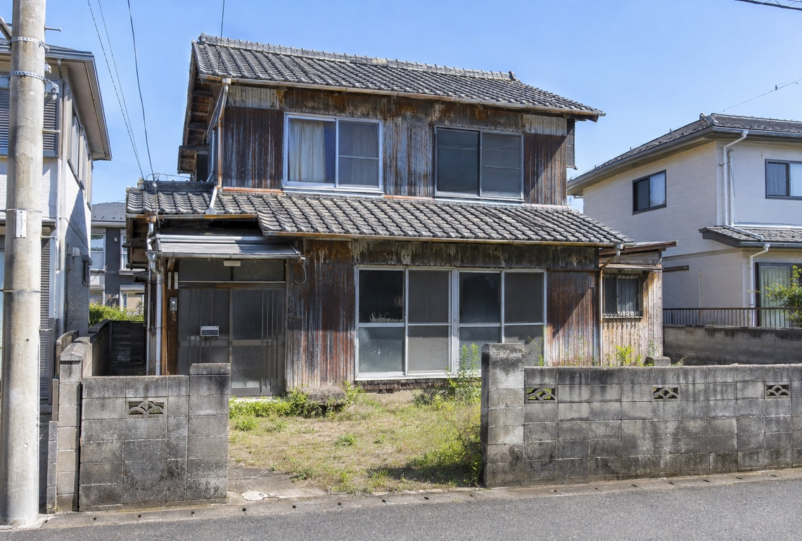
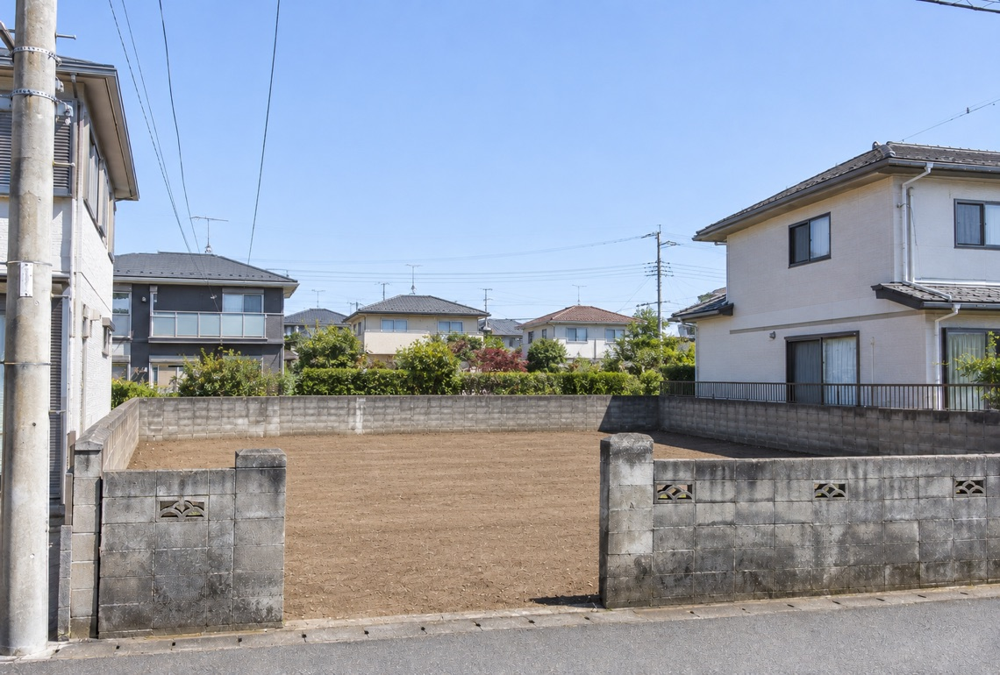

採用説明会
解体と
、
暮らしの困りごとを
、
まるごと引き受ける会社
福島県いわき市｜解体工事・便利屋・遺品整理
私たちの資産は「
人
」です
。
人には向き不向きがある
。
だから
、
一人ひとりの強みを見て
仕事を任せます
。
入社してからの流れ
1
先輩と現場に出る
1
か月
2
小さな現場を任せる
3
か月〜
3
現場のリーダーになる
1
年〜
施工前
施工後


木造
2
階建ての解体 工期
5
日
Q
未経験でも大丈夫？
A
大丈夫
です
。
入社した人の半分は未経験です
。